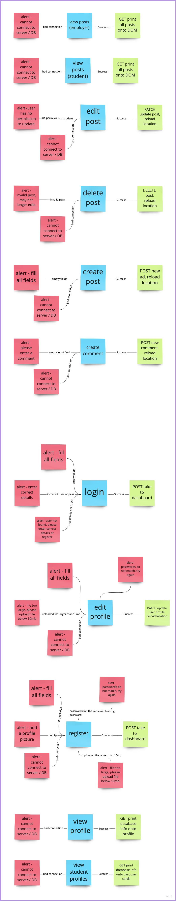
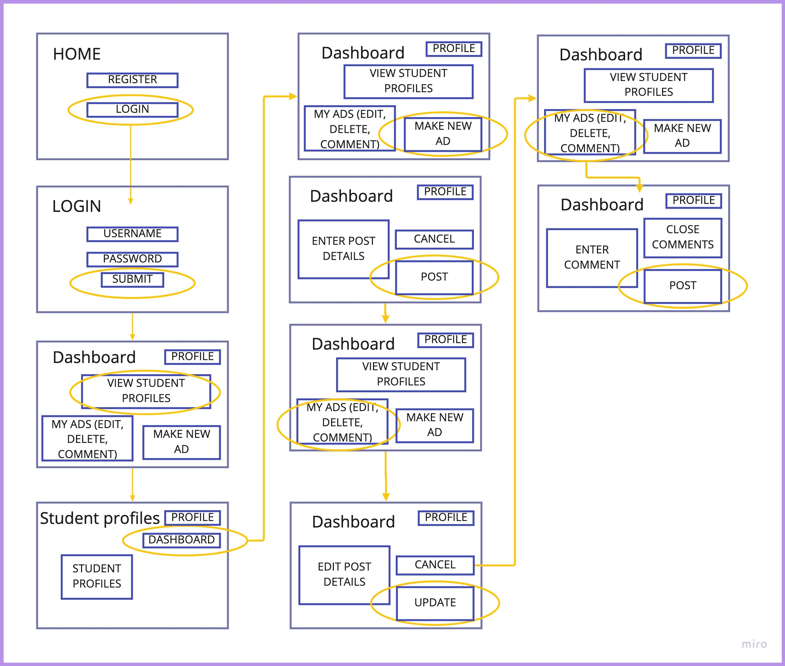
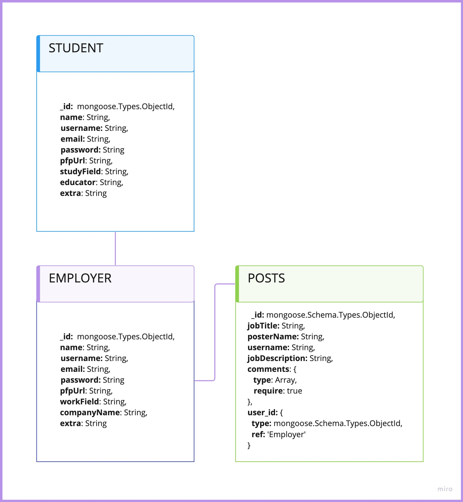
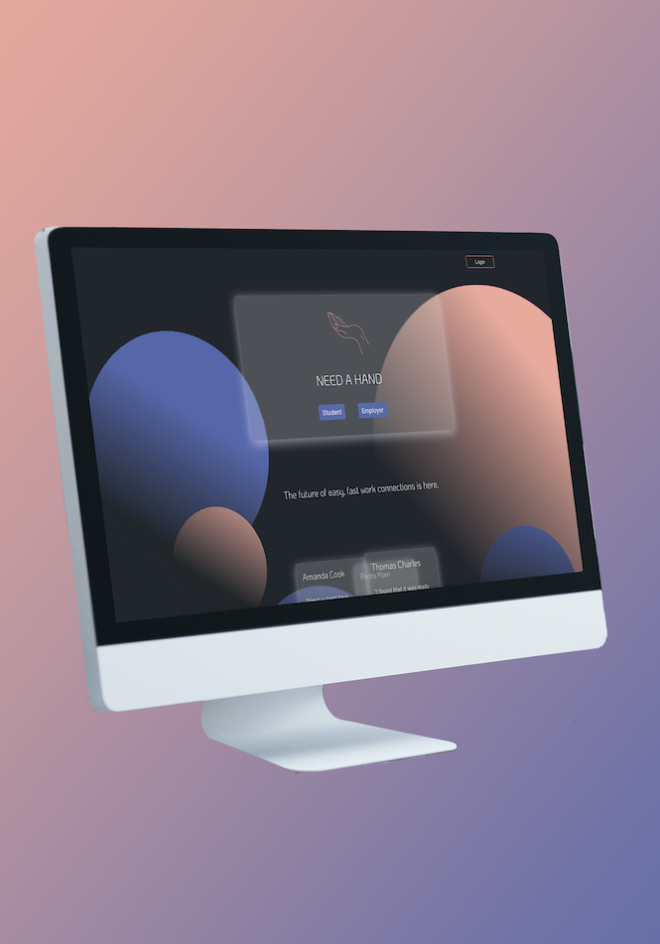

jQuery / Sass / npm / Grunt / Jshint / Uglify / Bootstrap / MongoDB / Cors / Express / Body parser / Postman / Mongoose / Slick slider / Material icons / Trello / Miro / Figma /
During my studies, I gained experience working in a team of four to build an application that is intuitive to use and display data from an API. The fictional website acts as a hub to connect employers with students looking for employment in line with their field of study. As a full-stack developer, I contributed to all facets of the design and build process. My role in the team was predominately focused on managing a NoSQL MongoDB database as an API and coding POST, GET, PATCH, and DELETE methods
We all worked closely to deliver the following deliverables within a four-week timeframe.
As a team, we worked within an agile environment and we each took turns acting as a scrum master, product owner, and developer during different sprint cycles. We used a shared Trello board, Google document, and Miro board to plan our project.
As a team, we discusses and created many activity UML diagrams to map the dynamic aspect of our web application. It allowed us to mentally map out the flow from one activity to another before we began coding.
I wrote user scenarios for the web application. See scenario one below:
Albert is an employer who is looking for a student to work part-time at his design agency. He would like to review student profiles and reach out to potential candidates. After looking over the student profiles, he decides it is worthwhile to post a new job ad for students to reach out to him. He posts an ad, then realizes he made a type error. He edits the ad to resolve the issue. A student quickly comments on the ad with a question, so Albert comments on the ad to reply to the student.
As all four team members were writing code to the database, we decided we would require a shared set of guidelines to follow when writing the code. This included instructions such as using single quotes over double quotes when writing JavaScript and declaring variables at the top of their scope.
A useful task I completed before coding was creating UML schemas to model the database. It gave the team a plan to work from.
We each conducted several rounds of prototype testing throughout the development and build process with users from our target market. This resulted in a polished, fully functioning website that met our intended deliverables.
